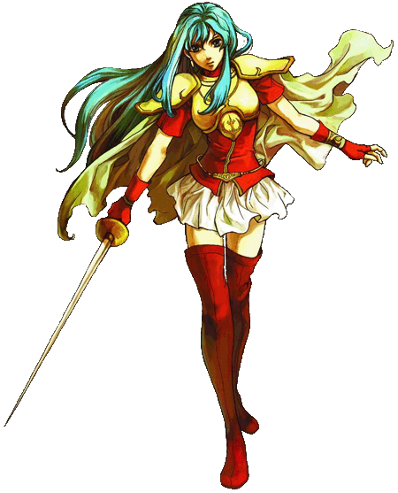
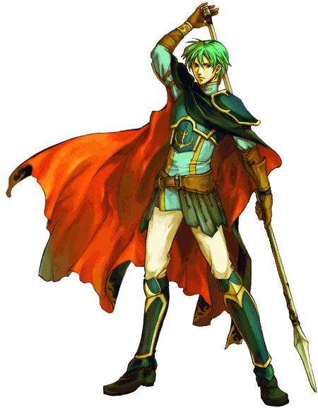
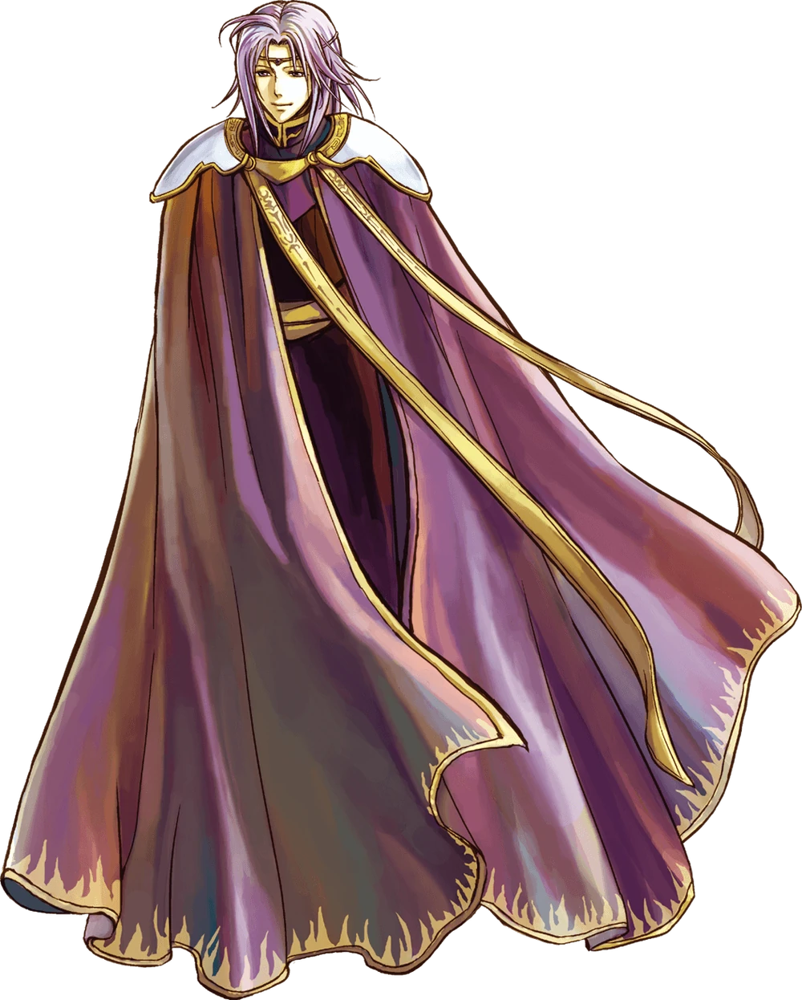
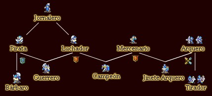

Personajes de Fire Emblem: The Sacred Stones

Fire Emblem: Sacred Stones cuenta con un elenco diverso de personajes, cada uno con su propia historia, personalidad y habilidades únicas. A continuación presentamos los personajes principales y algunos de los más destacados.
Personajes Principales
| Personaje | Clase | Rol en la historia | Arma principal |
|---|---|---|---|
| Eirika | Lord (Espadachín) | Princesa de Renais, protagonista | Espada |
| Ephraim | Lord (Lancero) | Príncipe de Renais, protagonista | Lanza |
| Seth | Paladín | Caballero de Renais, protector de los gemelos | Espada y Lanza |
| Lyon | Mago/Oscuro | Príncipe de Grado, antagonista/trágico | Magia oscura |
| Tana | Jinete de Pegaso | Princesa de Frelia, aliada clave | Lanza |
| Innes | Arquero | Príncipe de Frelia, arquero experto | Arco |
| L'Arachel | Curandera/Troubadour | Princesa de Rausten, excéntrica y devota | Báculo (curación) |
Imágenes de Personajes
Eirika
Ephraim
Lyon
Personajes Secundarios Destacados
- Franz: Joven caballero de Renais, leal a Seth
- Vanessa: Jinete de pegaso de Frelia, hermana de Syrene
- Joshua: Espadachín mercenario con un pasado misterioso
- Natasha: Curandera de Grado que se une a la resistencia
- Cormag: Jinete de wyvern de Grado con un sentido de honor
- Amelia: Joven recluta de Grado que busca redimirse
Sistema de Apoyos
Fire Emblem: Sacred Stones introduce el sistema de "apoyos", donde los personajes pueden formar vínculos en el campo de batalla. Estos apoyos otorgan bonificaciones estadísticas cuando los personajes están cerca y también desarrollan la historia personal entre ellos.
Promociones de Clase

Cada personaje puede promocionar a una clase avanzada usando items específicos. Algunos personajes tienen opciones múltiples de promoción:
- Eirika puede promocionar a Lord Maestra o Gran Lord
- Ephraim puede promocionar Lord Gran Caballero o Gran Lord
- Los curanderos pueden promocionar a Obispo o Fregador
- Los soldados pueden promocionar a General o Supercentinela